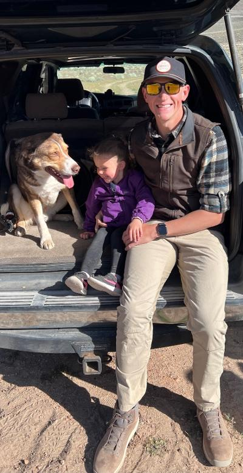

Hunter
Hello my name is Hunter Fehr, a proud Army veteran. I'm an active student within the Code Fellows program, aspiring to become a full stack developer. I am a fully dedicated individual that takes on new tasks head on and doesn't quit. The tech world will continue to grow, I want to on a personal and professional level to develop my skills as a developer to achieve overall growth in the niche of technology. I very much love the outdoors and exploring the wonderful area of Reno, Nv not to be confused with Reno 911.